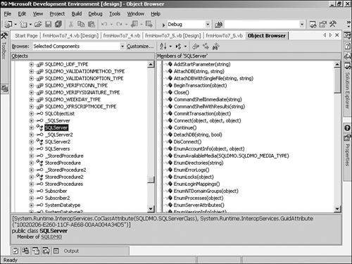

Before you can use the APIs within your .NET application, you need to create a reference to the particular library you are going to use. The libraries you will be using are COM libraries; therefore, you will not have certain benefits of using the .NET Framework, such as some of the performance gains. However, you can still use the libraries. Hopefully, if and when the libraries are updated to the framework, you will be able to convert your code over to use them.
To access the necessary libraries, choose Add Reference from the Project menu. Click on the COM tab to display possible COM libraries. Next, click Select after highlighting the following libraries: Microsoft DTSPackage Object Library and Microsoft SQLDMO Object Library. Click OK to close the dialog box. At that point, if you open the Object Browser, you can expand the Interop.SQLDMO library and even highlight the SQL Server object to see the properties and methods available. This is shown in Figure 7.4.

As you work through the following How-Tos, the various collections, objects, properties, and methods that you will be using will be listed as you need them. So many objects are available that it would take multiple pages to display the whole trees of the SQL-DMO and SQL-DTS object models.